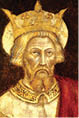
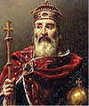
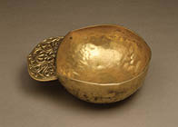
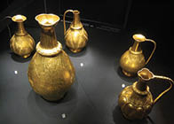
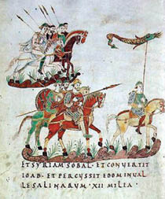

Avrupa Birliği’nin Mucidi Şarlman
İsa’dan sonraki 768 yılından öteye, bugünkü Fransızların ataları Frankların tahtına her anlamda büyük bir kral oturdu: Kısa Pépin’in 1,93 metre uzunluğundaki oğlu Birinci Şarl’ın15, boyuna bosuna uygun ihtirasları vardı. Hem Batı Avrupa’nın tartışmasız hâkimi, hem de Doğu Roma İmparatoru’ndan daha büyük bir imparator olmak istiyordu.

Carolus Magnus

Charlemagne
(Şarlman)
Bu amacını gerçekleştirebilmesi için kendisine imparator tacını giydirecek Batı Roma’daki Papalık makamının, Doğu Roma’daki Konstantinopolis Patrikliğinin üstünde sayılması gerekiyordu.
772’de Batı Roma Papalık tahtına Birinci Hadrianus çıktı. Frank Kralı Şarl, tam yeni Papa’yla iş bitirmeye hazırlanıyordu ki...
773 yılında beklenmedik bir şey oldu. Babası Kısa Pépin’in yendiği Lombardların kendisi gibi genç hükümdarı ve Konstantinopolis’teki imparatora sadık Kral Desiderius, Büyük Konstantin’e atfedilen vasiyetin Batı Roma’yı Doğu’dan koparmak için uydurulduğuna emindi. “Konstantin’in Bağışı” diye anılan sahte metne dayanarak kurulan Papalık Devleti’nin meşruiyetini reddederek, ordularıyla Roma’yı fethe çıktı.
Tarih, aktörleri değişmiş filmi, yeni bir çekimle tekrarlıyordu sanki: Yeni Papa Hadrianus, yeni Frank Kralı Şarl’dan, yine Lombard istilasına karşı yardım istedi.
Frank orduları, İtalya’yı Lombardlardan kurtarmak üzere yeniden sefere çıktı.
Yüzyıllar geçecek, yine aktörler değişecek ama aynı film bir daha, bir daha çekilecekti. Ta ki, zaman makinesi kırılana ve sonuç farklı olana dek.
Birleştirmesi gereken dinin, 1500 yıl süreyle ayrıştırıp savaştıracağı Avrupa halkları, Hıristiyanlığın gerekçe gösterileceği çatışmanın başında, peşrev çekiyorlardı, henüz...
774 yılında, Frank orduları Lombardları bozguna uğrattı. Yenik Desiderius’un krallık tacını da başına geçiren Şarl, artık hem Frankların hem de Lombardların hükümdarı Şarlman diye anılacaktı.
Şarlman, zaferini kutlamak için düzenlenen törende, “Konstantin’in Bağışı” vasiyetine uyacağını bir kez daha ilanla, Papa Hadrianus’un sahte vasiyetten kaynaklanan –uyduruk– meşruiyetini resmen tanımış oldu.
Latin ve Germen tarihine Karolus Magnus, yani Yüce Karolus olarak geçecek Şarlman, hayalindeki Avrupa İmparatorluğu’nu kurabilmek için önce din ve dil birliğini sağlaması gerektiğini biliyordu. Zaten Papa’ya verdiği desteğin ardında da bu gaye vardı. Dinsel ayin dili ve usullerini, Kadim Roma Kilisesi’nin geleneklerine göre Latinceye uyarladı.
789’da bir genelge yayınladı. Genelgede Hıristiyan topluma ilişkin görüşlerini ve tebaasına ayinlerde izlenmesi gereken Latin ritüellerini açıklıyordu. O tarihten öteye Frankların “Galya geleneği” diye anılan ve Roma Kilisesi’nden farklılık gösteren ayin özellikleri, özgün dili yavaş yavaş kaybolmaya yüz tuttu. Bu dönüşümün hem iktidarını güçlendirip hem meşruiyetini sağlamladığı Papa Hadrianus’un etekleri zil çalıyordu!
Papa Hadrianus, 795’te öldü. Yerine Üçüncü Leo, Papa seçildi.16
Eski Papa’nın haznedarı ve Kardinal düzeyinde bilgin bir papaz olan Leo, Papalık tacını giyer giymez ilk iş; Şarlman’a bir mektup eşliğinde Aziz Petrus’un günah çıkarma belgesinin (confessio) saklandığı sandukanın anahtarlarını ve Roma’nın sancağını yolladı. Şarlman da kendisine, Roma Kilisesi’nin koruyucusu olacağını yineleyen bir yanıtla birlikte Avarlardan aldığı ganimetin bir bölümünü gönderdi.
Burada durup Avarlara ilişkin kısa bir bilgi vermek isterim.
Avrupa’da Konuşulan İlk Asya Dili: Türkçe
6. yüzyıldan öteye Volga ile Tuna Nehirleri arasındaki coğrafyaya yayılan Avarlar, kimi tarihçilerin Moğol kimi tarihçilerin ise Hun, Göktürk ya da Uygur asıllı olduklarını iddia ettikleri, ama Orta Asya’dan geldikleri kesin göçebelerdir. Kafkaslar, Kırım ve Ukrayna üzerinden Avrupa’nın ortasına kadar gelen bu savaşçı kavimler, kuşkusuz Orta Asya’nın her soyundan unsur içerir. Ne var ki Göktürk ve Uygur ağırlıklı olup Türkçe konuştukları bellidir. En ünlü hükümdarları, Bayan Kağan’dır. Orta Avrupa’yı işgal edip Trakya ve Balkanlar’da Doğu Roma ordularıyla savaşan Avarlar, 586’dan 597’e kadar Selanik’i bile kuşatmışlardır. 7. yüzyılda bugünkü Macaristan’a çekilip yerleşik bir uygarlık kurmuş, günümüze hayret verici ustalıkta el sanatı objeler bırakmışlardır.
Çöküş dönemine giren Avar Kağanlığı’nın sonunu, Şarlman getirir. Kurmak istediği Avrupa İmparatorluğu’nda yerleşik Hıristiyan toplumlarını yüzyıllardır akın, fetih ve talanla tarumar eden “pagan” Avarlara yer yoktur. Slav ve Germenlerin de katıldığı Frank orduları, 791’den 811 yılına kadar süren
seferlerle Avarları haritadan siler. Frank orduları, Avarların son sığınağı, yüzyıllardır topladıkları ganimeti sakladıkları Ring Avar’ı17 talan ederler.

Arnavutluk’ta bulunan bir Avar maşrapası

Avar ibrikleri / Viyana Müzesi
Avarların da yağma ve talanla edindikleri hazine öylesine muazzamdır ki, Şarlman’ın Aachen’deki (Almanya) sarayına 15 araba dolusu altın nakledildiği anlatılır.
Şarlman’ın, Papa Leo’ya gönderdiği savaş ganimeti, işte bu hazinenin bir parçasıdır. Zaten Avrupa İmparatorluğu’nun kuruluşunu da Avarlardan aldığı ganimetle finanse etmiştir.
Teslim olanları zorla, sağ kalanları zamanla Hıristiyanlaşan Avarlar, Bulgar, Macar ve Finlilere karışmıştır. Hatta Macarca ile Fincenin, Ural/Uygur kökenli diller oluşu ve birkaç yüz Türkçe kökenli sözcük içermeleri, karıştıkları Avarların kültür mirası sayılmaktadır.

Avar seferinde Frank süvarileri
Avar Kağanlığı’nın, Avrupa’nın siyasal coğrafya oluşumunun başlangıcında yüzyıllarca süren varlığı bile, bugün Avrupalıları Asyalılardan ayıran biricik etkenin ne ırk, ne tarih, ama “din kültürü” olduğunu ortaya koymaktadır.
15 Fransızca Charles, Latince Carolus’tur. İmparator olduğunda Almanlar tarafından Karolus Magnus, Fransızlar tarafından Charlemagne diye anılacak ve Türkçe tarihe Şarlman adıyla geçecektir.
16 Cemaat ve ülkelerin başına ancak soyağacı ya da savaşarak iktidar olunabilen tarihin bu çağlarında; Hıristiyanlığın meşru sözcüleri, Papa dahil beş meşru Başpatriğin, daha ilk yüzyıldan öteye herhangi bir otoritenin atamasıyla değil, bir ruhban meclisinin seçimiyle saptanması ilginçtir. Hıristiyanlıktan altı yüzyıl sonra ortaya çıkan İslamiyetin hilafet ve imamet makamları, tavsiye ya da tayinle saptanır. Tarihte çok az sayıda halifenin dinî şura ya da halk tarafından seçildiği görülür.
17 Avarların bugünkü Macaristan’ın ortasına kurdukları kale kent. Balçık surlarla çevrili kale, çember biçiminde olduğu için Batılılar tarafından Ring Avar diye anılır. Türkçesi yok ya da ben bulamadım.